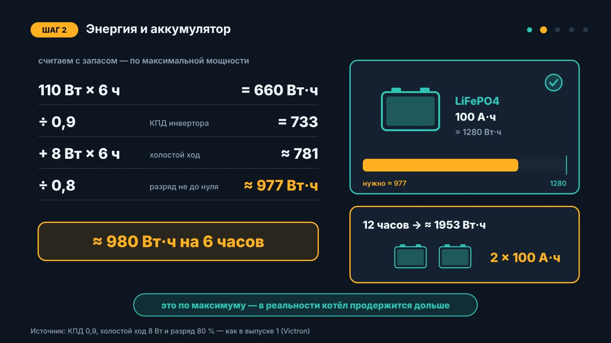

Разделы
Алгоритмы
Каждый алгоритм — расчёт по шагам с формулами и источниками. К каждому есть ролик и калькулятор.
 Выпуск 1Резервное питание квартиры: расчёт по шагамКакой аккумулятор и инвертор нужны на 6 часов отключения.
Выпуск 1Резервное питание квартиры: расчёт по шагамКакой аккумулятор и инвертор нужны на 6 часов отключения.
 Выпуск 2Зарядная станция или свой комплект: что выгоднееЦена за ватт-час, расширение, скорость зарядки, переключение, ремонт.
Выпуск 2Зарядная станция или свой комплект: что выгоднееЦена за ватт-час, расширение, скорость зарядки, переключение, ремонт.

Выпуск 3Резервное питание газового котлаМощность, аккумулятор, инвертор, фазировка и безопасное подключение. Выпуск 4Резервное питание роутера: интернет без светаЧто питать, сколько ватт, мини-ИБП или power bank и сколько часов.
Выпуск 4Резервное питание роутера: интернет без светаЧто питать, сколько ватт, мини-ИБП или power bank и сколько часов.
 Выпуск 5Как устроен инвертор и как читать его паспортСинусоида, мощность при 40 °C, пик, холостой ход, 12/24/48 В.
Выпуск 5Как устроен инвертор и как читать его паспортСинусоида, мощность при 40 °C, пик, холостой ход, 12/24/48 В.
 Выпуск 6AGM или LiFePO4: какой аккумулятор выгоднее за 10 летЦиклы, мороз и жара, потери на зарядку, число покупок.
Выпуск 6AGM или LiFePO4: какой аккумулятор выгоднее за 10 летЦиклы, мороз и жара, потери на зарядку, число покупок.
 Выпуск 7Генератор или зарядная станция: что выбрать для квартиры и домаБалкон, расстояние и подключение, бензин и масло, связка «генератор + станция».
Выпуск 7Генератор или зарядная станция: что выбрать для квартиры и домаБалкон, расстояние и подключение, бензин и масло, связка «генератор + станция».